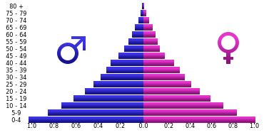
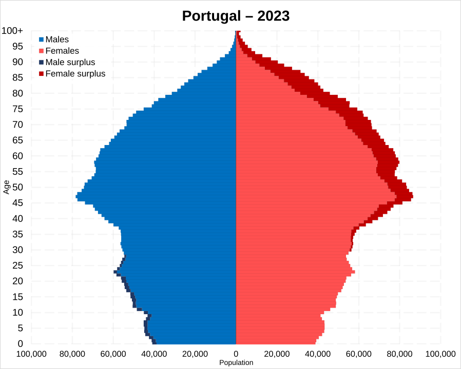
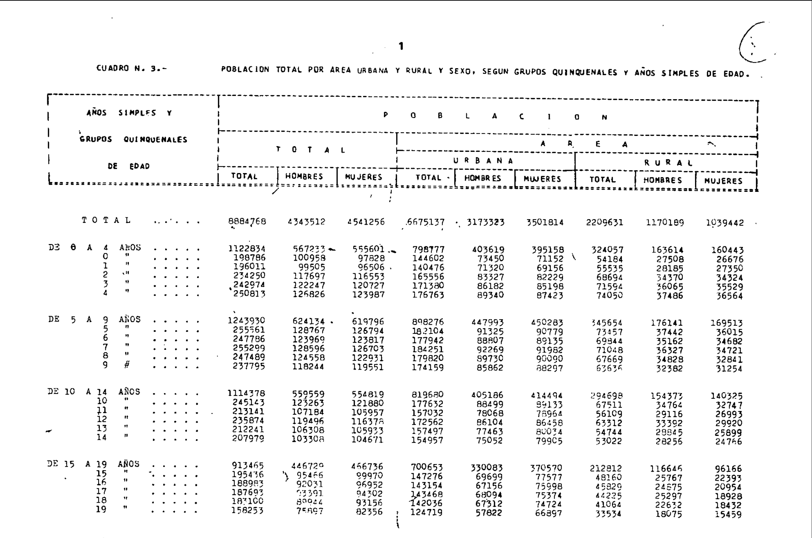

pacman::p_load(tidyverse, # Paquetes de data science básicos
readxl, # Cargar archivos xlsx
scales, # Ajustar etiquetas de gráficos
paletteer, # Cargar paletas de colores
gganimate, # Animar gráficos
ggtext, # Funciones de texto
glue) # Paste con esteroidesEn los últimos años, se ha reactivado en Chile el debate sobre el envejecimiento de la población y los cambios en la tasa de natalidad. En particular, con la última Reforma de Pensiones apareció nuevamente la preocupación por la vejez y cómo la sociedad y el Estado se deben hacer cargo de este proceso vital (al menos eso se discutió, que se logre es otro tema). Se habla que cada vez habrá más población adulta y adulta mayor, que población infantil y juvenil. Estas transformaciones son características de diferentes sociedades, y las primeras en enfrentarlo fueron las potencias económicas europeas. A día de hoy, países como Chile, en el Sur Global, han homologado esas tendencias, con sus particularidades.
Si bien no es el propósito definir las causas y consecuencias, es importante mencionar que estas son de carácter económico, social y cultural, y entre los factores que inciden podemos mencionar (sin un orden particular) las migraciones urbano-rurales, el acceso a educación, mejoras en la salud y medicina, la integración femenina en el mercado laboral, cambios en los roles de género, la educación sexual y la planificación familiar, entre otros.
Pirámides de población
Uno de los dispositivos visuales más efectivos para mostrar estos fenómenos son las pirámides de población. En esencia, son histogramas que segmentan la población por edad (usualmente en quinquenios) y sexo, mostrando a hombres a la izquierda y mujeres a la derecha.
Las barras pueden representar la cantidad absoluta de la población, o su frecuencia relativa. Los datos absolutos son útiles para representar el aumento neto de los habitantes, pero son menos útiles para comparar con otros casos, siendo esto una ventaja que ofrecen las pirámides que usan porcentajes.
La demografía, ciencia que estudia las poblaciones humanas, su composición y cambio, ha teorizado en torno a las formas que toman las pirámides de población en las diferentes sociedades. Los cambios vividos durante el siglo XX han generado una transición demográfica, pasando de altas tasas de natalidad y mortalidad, a bajas tasas en ambos indicadores. Esta teoría, que considera en 5 fases, explica cómo ocurre este cambio, y su impacto en la población total.
Visualmente esto se refleja en la forma de las pirámides de población. Aquellas sociedades con altas tasas de natalidad y mortalidad (fase 1) tienen pirámides con una forma de campana muy marcada con gran cantidad de niños y jóvenes. En el otro extremo tenemos a países de bajas tasas de natalidad y mortalidad, cuyas pirámides tienen una forma más homogénea o pareja, casi como una campana invertida, con muy poca población jóven y una gran mayoría adulta y adulta mayor.


Para profundizar en torno a esto recomiendo leer los artículos de Wikipedia sobre Pirámides de Población y Transición demográfica, además de este artículo escrito por Max Roser en Our World in Data.
El caso de Chile
Para conocer el cambio demográfico de Chile debemos recurrir a la principal fuente de información: el Censo de Población y Vivienda. Este levantamiento de datos es ejecutado por el Instituto Nacional de Estadísticas desde el siglo XIX y sus últimas versiones fueron realizadas en los años 1970, 1982, 1992, 2002 y 20171. A fecha de hoy (febrero de 2025) el INE aún no publica los resultados del último censo de 20242. Para enfrentar mejor la espera he decidido que es un buen ejercicio evaluar el cambio demográfico del país en los últimos 50 años.
Obtención de los datos
Para acceder a los datos censales el INE ha dispuesto en su página web diferentes alternativas para obtener la información. Para el Censo de 2017 están disponibles los micro datos y las bases en Redatam, mientras que para los censos de 1992 y 2002 solo están disponibles en Redatam. Los datos de 1970 y 1982 solo son accesibles a través de las memorias publicadas con los resultados, ambos en formato .pdf en el sitio del INE.
Por ello, el proceso comenzó con la obtención de los datos desde la plataforma Redatam Web para los censos de 1992, 2002 y 2017, solicitando tablas cruzadas con el sexo y la edad en quinquenios. En el caso de 1970 y 1982 fue necesario revisar manualmente los documentos y copiarlos a una planilla de cálculo3. Dado que para el Censo de 1970 los datos agrupados disponen como máxima categoría de edad “85 años y más” fue necesario agrupar al resto de datos acorde a esta categoría máxima.
Todos los datos quedaron registrados en diferentes archivos de planilla de calculo (.xlsx).

Manos a la obra: pirámides de población en R
Para comenzar, mi flujo de trabajo se basa en Rstudio Projects. Lo primero es cargar paquetes y los archivos.
# El número indica el año del censo
base_70 <- read_xlsx("data/composicion_poblacion.xlsx", sheet = "censo_70")
base_82 <- read_xlsx("data/composicion_poblacion.xlsx", sheet = "censo_82")
base_92 <- read_xlsx("data/1992_reporte.xlsx", sheet = "censo_92")
base_02 <- read_xlsx("data/2002_reporte.xlsx", sheet = "censo_02")
base_17 <- read_xlsx("data/2017_reporte.xlsx", sheet = "censo_17")Ya que los datos quedaron en 5 objetos diferentes, los unimos con el siguiente código:
# unimos todo en una lista
lista_total <- list(base_70, base_82, base_92, base_02, base_17)
# aplicamos rbind a cada elemento de la lista
union <- do.call(rbind, lista_total)Al tenerlo unido, podemos aplicar algunas técnicas de limpieza. Por ejemplo, quitamos la etiqueta “años” de las categorías de edad, y los transformamos en factor. Luego pivoteamos al formato largo, pasando de dos columnas (Hombres-Mujeres) a otras dos (Sexo-Población).
consolidado <- union |>
# removemos la etiqueta "años"
mutate(Edades = str_remove(Edades, " años"),
Edades = str_remove(Edades, "\\s\\s"),
# Transformamos a factor en el orden en que aparecen
Edades = fct_inorder(Edades)) |>
pivot_longer(cols = 3:4,
names_to = "Sexo",
values_to = "Poblacion")Como resultado obtenemos el siguiente tibble/data frame, con el año de censo, el tramo de edad, el sexo y la cantidad de población:
#knitr::kable(head(consolidado, 10))
DT::datatable(consolidado)Notas
En 2012 se realizó un censo, sin embargo fue considerado inválido por falencias metodológicas↩︎
En el comunicado de prensa publicado en su sitio web se anuncia la primera publicación de los datos para el 27 de marzo de 2025. Ver noticia↩︎
Si bien fue realizado manualmente, se pueden implementar otro métodos como el Reconocimiento de Caracteres (OCR) para automatizar el proceso↩︎